전자계산기조직응용기사 (2011-03-20 기출문제)
1과목: 전자계산기 프로그래밍
1. 객체지향 개념에서 다음 설명에 해당하는 것은?
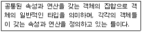
- 메시지
- 클래스
- 메소드
- 추상화
(정답률: 77%)

2. C 언어의 기억 클래스 종류에 해당하지 않는 것은?
- Automatic Variables
- Register Variables
- Internal Variables
- Static Variables
(정답률: 75%)
3. C 언어에서 이스케이프 시퀀스의 설명이 옳지 않은 것은?
- \r : carriage return
- \t : tab
- \f : fault
- \b : backspace
(정답률: 86%)
4. 어셈블리어에 대한 설명으로 옳지 않은 것은?
- 명령 기능을 쉽게 연상할 수 있는 기호를 기계어와 1:1로 대응시켜 코드화한 기호 언어이다.
- 어셈블리어의 기본 동작은 동일하지만 작성한 CPU마다 사용되는 어셈블리어가 다를 수 있다.
- 어셈블리어로 작성한 원시 프로그램은 로더를 통해 목적 프로그램으로 번역한다.
- 프로그램에 기호화된 명령 및 주소를 사용한다.
(정답률: 75%)
5. 어셈블러(Assembler)를 가장 바르게 설명한 것은?
- 고급언어로 작성된 원시 프로그램을 컴퓨터가 이해할 수 있는 기계어 명령으로 번역하여 목적 프로그램을 생성시키는 프로그램
- 저급언어로 작성된 원시 프로그램을 컴퓨터가 이해할 수 있는 기계어 명령으로 번역하여 목적 프로그램을 생성시키는 프로그램
- 컴퓨터가 적접 실행할 수 있는 제어 신호를 2진수 형태로 표기해 놓은 언어
- 기계어 명령들로 표현된 프로그램
(정답률: 68%)
6. C 언어에서 논리 곱(AND)을 나타내는 논리 연산자는?
- ||
- !
- &&
- >
(정답률: 94%)
7. 원시프로그램을 번역할 때 어셈블러에게 요구되는 동작을 지시하는 명령으로서 기계어로 번역되지 않는 명령어를 무엇이라고 하는가?
- 매크로 명령(Macro Instruction)
- 기계어 명령(Machine Instruction)
- 의사 명령(Pseudo Instruction)
- 오퍼랜드(Operand Instruction))
(정답률: 90%)
8. 단항(Unary) 연산자 연산에 해당하지 않는 것은?
- Move
- Shift
- Or
- Complement
(정답률: 82%)
9. 시스템 프로그래밍에 가장 적합한 언어는?
- COBOL
- BASIC
- C
- FORTRAN
(정답률: 88%)
10. 작성된 표현식이 BNF의 정의에 의해 바르게 작성되었는지를 확인하기 위하여 만든 트리는?
- Memo tree
- King tree
- Parse tree
- Home tree
(정답률: 86%)
11. 어셈블리어에서 어떤 기호적 이름을 상수 값을 할당하는 명령은?
- ASSUME
- ORG
- EVEN
- EQU
(정답률: 77%)
12. 객체가 메시지를 받아 실행해야 할 객체의 구체적인 연산을 정의한 것은?
- 메소드
- 클래스
- 인스턴스
- 속성
(정답률: 80%)
13. 객체지향 시스템에서 데이터와 데이터를 처리하는 함수를 하나로 묶는 것을 의미하는 것은?
- Information hiding
- Inheritance
- Encapsulation
- Polymorphism
(정답률: 73%)
14. 프로그래밍 언어의 해독 순서로 옳은 것은?
- 링커 → 로더 → 컴파일러
- 컴파일러 → 로더 → 링커
- 컴파일러 → 링커 → 로더
- 로더 → 컴파일러 → 링커
(정답률: 80%)
15. C 언어에서 정수형 자료 선언시 사용하는 것은?
- float
- double
- int
- char
(정답률: 77%)
16. C 언어에서 부호 없는 10진 정수를 출력하고자 할 때 printf문의 변환 문자는?
- %u
- %x
- %c
- %f
(정답률: 83%)
17. C 언어에서 지정된 파일로부터 한 문자씩 읽어 들이는 파일 처리 함수는?
- fopen()
- fscanf()
- fget()
- fgets()
(정답률: 55%)
18. 어셈블리어에서 라이브러리에 기억된 내용을 프로시저로 정의하여 서브루틴으로 사용하는 것과 같이 사용할 수 있도록 그 내용을 현재의 프로그램 내에 포함시켜 주는 명령은?
- SEGMENT
- INCLUDE
- OR
- EXTRN
(정답률: 86%)
19. 어셈블리어에서 서브루틴을 호출하는 명령은?
- LOOP
- JMP
- CALL
- LOOPE
(정답률: 89%)
20. 기계어에 대한 설명으로 옳지 않은 것은?
- 사람 중심의 언어로서 유지보수가 용이하다.
- 2진수를 사용하여 데이터를 표현한다.
- 프로그램의 실행 속도가 빠르다.
- 기계마다 언어가 다르며 호환성이 없다.
(정답률: 88%)
2과목: 자료구조 및 데이터통신
21. 비동기 전송방식에서 스타트(Start)와 스톱(Stop) 신호의 필요성에 대하여 가장 잘 설명한 것은?
- 메시지 단위로 정보를 전송하기 위해 사용한다.
- 정보단위의 하나이므로 사용한다.
- 바이트(Byte)와 바이트(Byte) 사이를 구분하기 위하여 사용한다.
- 비트(Bit)를 표본화하기 위하여 사용한다.
(정답률: 60%)
22. 여러 개의 채널을 몇 개의 소수 회선으로 공유화시키는 장치는?
- 변조기
- 집중화기
- 복조기
- 선로 공동 이용기
(정답률: 57%)
23. 송수신 스테이션 사이에 데이터를 전송하기 전에 먼저 교환기를 통해 물리적으로 연결이 이루어지는 교환 방식은?
- 회선 교환
- 데이터그램 패킷 교환
- 가상회선 패킷 교환
- 메시지 교환
(정답률: 69%)
24. X.25 프로토콜에서 제공하는 접속서비스 기능으로 옳은 것은?
- PRC(Program Recovery Circuit)
- PMC(Performance Maintenance Circuit)
- PAC(Physical Address Circuit)
- PVC(Permanent Virtual Circuit))
(정답률: 65%)
25. OSI 7계층 중 데이터 링크 계층의 프로토콜로 옳지 않은 것은?
- HDLC
- PPP
- LLC
- HTTP
(정답률: 75%)
26. 다음에서 데이터링크의 전송제어 절차의 순서가 올바른 것은?
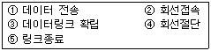
- ⑤-④-②-③-①
- ②-③-①-⑤-④
- ②-③-⑤-①-④
- ②-③-①-④-⑤
(정답률: 73%)
27. 중앙에 호스트 컴퓨터가 있고 이를 중심으로 터미털들이 연결되는 네트워크 구성 형태는?
- 버스형
- 링형
- 성형
- 그물형
(정답률: 83%)
28. IP 프로토콜의 특징으로 옳지 않은 것은?
- 라우팅 단편화 기능을 수행한다.
- 비신뢰성 프로토콜이다.
- IP 헤더는 항상 20바이트의 고정된 길이를 가진다.
- IP 데이터그램은 전송순서와 도착순서가 다를 수 있다.
(정답률: 50%)
29. IPv6에 대한 설명으로 옳지 않은 것은?
- IPv6 주소는 128비트 길이이다.
- 암호화와 인증 옵션 기능을 제공한다.
- QoS는 일부 지원하지만, 품질 보장이 곤란하다.
- 프로토콜의 확장을 허용하도록 설계되었다.
(정답률: 85%)
30. 다음이 설명하고 있는 것은?
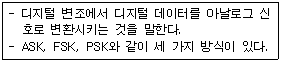
- Carrier
- Manchester
- Keying
- Converter
(정답률: 72%)
31. 2진수 00001101에 대한 2의 보수는?
- 11110011
- 11110010
- 11110111
- 11111010
(정답률: 76%)
32. DBMS의 필수 기능에 해당하지 않는 것은?
- 정의 기능
- 응용 기능
- 조작 기능
- 제어 기능
(정답률: 78%)
33. 색인 순차(Indexed Sequential Access) 파일의 색인구역에 해당하지 않는 것은?
- Track Index
- Cylinder Index
- Master Index
- Overflow Index
(정답률: 79%)
34. 다음 트리를 전위 순회(Pre-Order Traversal)한 결과는?
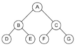
- ABDECFG
- BDEACFG
- DEBAFGC
- DEBFGCA
(정답률: 69%)
35. 스택에 대한 설명으로 옳지 않은 것은?
- 리스트의 한쪽 끝으로만 자료의 삽입, 삭제 작업이 이루어지는 자료구조이다.
- LIFO 방식으로 자료를 처리한다.
- 스택의 가장 밑바닥을 Bottom 이라고 한다.
- 운영체제의 작업 스케줄링에 사용되는 자료구조이다.
(정답률: 80%)
36. 스키마의 3계층 중 다음 설명에 해당하는 것은?
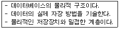
- 외부 스키마
- 개념 스키마
- 내부 스키마
- 관계 스키마
(정답률: 72%)
37. 선형 구조에 해당하지 않는 것은?
- 스택
- 트리
- 큐
- 데크
(정답률: 82%)
38. 다음 자료에 대하여 버블 정렬을 사용하여 오름차순 정렬할 경우 1회전 후의 결과는?
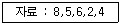
- 5, 6, 2, 4, 8
- 5, 8, 6, 2, 4
- 2, 8, 5, 6, 4
- 4, 8, 5, 6, 2
(정답률: 82%)
39. 데이터베이스의 등장 배경으로 거리가 먼 것은?
- 물리적인 주소가 아닌 데이터 값에 의한 검색을 수행하고 싶었다.
- 여러 사용자가 데이터를 공유해야 할 필요가 생겼다.
- 데이터의 가용성 증가를 위해 중복을 허용하고 싶었다.
- 데이터의 수시적인 구조 변경에 대해 응용 프로그램을 매번 수정하는 번거로움을 줄여보고 싶었다.
(정답률: 79%)
40. 해싱에서 동일한 버켓 주소를 갖는 레코드들의 집합을 의미 하는 것은?
- synonym
- collision
- slot
- bucket
(정답률: 79%)
3과목: 전자계산기구조
41. 재귀호출(recursive call) 프로그램에 해당하는 것은?
- 한 루틴(routine)이 반복될 때
- 한 루틴(routine)이 자기를 다시 호출할 때
- 다른 루틴(routine)이 다른 루틴을 호출할 때
- 한 루틴(routine)에서 다른 루틴으로 갈 때
(정답률: 69%)
42. 다음 중 프로그램 제어와 가장 밀접한 관계가 있는 것은?
- memory address register
- index register
- accumulator
- status register
(정답률: 54%)
43. fetch cycle에서 일어나는 micro instruction 이다. 실행 순서가 옳은 것은?(단, MAR : Memory Address Register, MBR : Memory Buffer Register, PC : Program Counter, OPR : Operation Code Register)
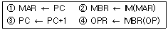
- ②→①→③→④
- ①→②→③→④
- ②→④→①→③
- ③→①→②→④
(정답률: 47%)
44. 메가플롭스(MFLOPS)에 대한 설명으로 옳은 것은?
- 1클록펄스간에 실행되는 부동소수점 연산의 수를 10만을 단위로 하여 나타낸 수
- 1클록펄스간에 실행되는 고정소수점 연산의 수를 10만을 단위로 하여 나타낸 수
- 1초간에 실행되는 부동소수점 연산의 수를 100만을 단위로 하여 나타낸 수
- 1초간에 실행되는 고정소수점 연산의 수를 100만을 단위로 하여 나타낸 수
(정답률: 59%)
45. 플립플롭 중 입력단자가 하나이며, 1이 입력될 때마다 출력단자의 상태가 바뀌는 것은?
- RS 플립플롭
- T 플립플롭
- D 플립플롭
- M/S 플립플롭
(정답률: 71%)
46. 다음 중 잘못 연결한 것은?
- Associative Memory - Memory Access 속도 향상
- Virtual Memory - Memory 공간 확대
- Cache Memory - Memory Access 속도 확대
- Memory Interleaving - Memory 공간 확대
(정답률: 55%)
47. 회로의 논리함수가 다수결 함수(Majority Function)를 포함하고 있는 것은?
- 전가산기
- 전감산기
- 3-to-8 디코더
- 우수 패리티 발생기
(정답률: 54%)
48. 다음 중 Unicode와 ASCII 코드와의 관계를 가장 잘 설명한 것은?
- Unicode는 ASCII를 인식할 수 있지만 ASCII에서는 Unicode의 특수문자를 인식할 수 없다.
- Unicode는 ASCII를 인식할 수 없고, ASCII에서도 Unicode의 특수문자를 인식할 수 없다.
- Unicode는 ASCII를 인힉하고 ASCII에서도 Unicode의 특수문자를 인식할 수 있다.
- Unicode는 ASCII를 인식할 수 없지만 ASCII에서는 Unicode의 특수문자를 인식할 수 있다.
(정답률: 57%)
49. 우선순위 인터럽트 운영 방식이 아닌 것은?
- LCFS(Last Come First Service)
- FCFS(First Come First Service)
- Masking Schema
- Fixed Service
(정답률: 48%)
50. 다음 불 함수를 간략화한 결과는?
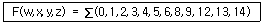
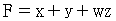
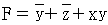
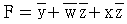
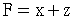
(정답률: 52%)
51. 다음은 인터럽트 체제의 동작을 나열한 것이다. 수행 순서를 올바르게 표현한 것은?
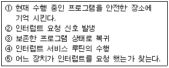
- ②→⑤→①→③→④
- ②→①→④→⑤→③
- ②→④→①→⑤→③
- ②→①→⑤→④→③
(정답률: 60%)
52. 다음은 명령어 형식에 대한 설명이다. 옳은 것은?
- 명령은 보통 OP 코드부분과 오퍼랜드 부분으로 나누며 오퍼랜드는 수행해야 할 동작을 명시하는 부분이고 OP 코드는 연산의 대상물이다.
- 기억장치의 주소나 레지스터를 저장하거나 실제 데이터 값을 가지고 있는 부분이 오퍼랜드이다.
- 오퍼랜드의 비트 수가 n 비트인 경우 2n가지의 서로 다른 동작을 수행할 수 있다.
- 오퍼랜드에는 유효번지를 결정하기 위한 모드 비트를 가질 수 없다.
(정답률: 52%)
53. 1의 보수 표현 방식에 의해 8 비트로 표현돤 9+(-24)의 연산 수행시 그 결과는?
- 0100 1111
- 1111 0000
- 1000 1111
- 0111 0000
(정답률: 46%)
54. 명령어 파이프라인 단계 수가 4 이고 파이프라인 클록(clock) 주파수가 1㎒인 경우 10개의 명령어들이 파이프라인 기법에서 실현될 경우 소요 시간으로 가장 적합한 것은?
- 4㎲
- 8㎲
- 13㎲
- 40㎲
(정답률: 37%)
55. 비교적 속도가 빠른 자기 디스크에 연결하는 채널은?
- 바이트 채널
- 셀렉터 채널
- 서브 채널
- 멀티플렉서 채널
(정답률: 43%)
56. 컴퓨터 주기억장치의 용량이 256MB 라면 주소 버스는 최소한 몇 Bit이어야 하는가?
- 20 Bit 이상
- 24 Bit 이상
- 26 Bit 이상
- 28 Bit 이상
(정답률: 53%)
57. 컴퓨터 시스템과 주변 장치간의 데이터 전송 방식에 해당되지 않는 것은?
- 루프 입출력(loop I/O) 방식
- DMA(Direct Memory Access) 방식
- 인터럽트 입출력(Interrupt I/O) 방식
- 프로그램 입출력(Programmed I/O) 방식
(정답률: 50%)
58. 하나의 명령 사이클을 실행하는데 2개의 머신 사이클이 필요하다고 했을 때 CPU 클록 주파수를 10㎒로 동작시켰다. 이 때 1개의 명령 사이클을 실행하는데 걸리는 시간은?(단, 각각의 머신 사이클은 5개의 머신 스테이트로 구성되어 있다.)
- 1㎲
- 2㎲
- 10㎲
- 20㎲
(정답률: 33%)
59. 중재동작이 끝날 때마다 모든 마스터들의 우선순위가 한 단계씩 낮아지고 가장 우선순위가 낮았던 마스터가 최상의 우선순위를 가지도록 하는 가변우선순위 방식은?
- 동등 우선주위(Equal Priority) 방식
- 임의 우선순위(Random Priority) 방식
- 회전 우선순위(Rotation Priority) 방식
- 최소-최근 사용(Least Recently Used) 방식
(정답률: 69%)
60. 마이크로 오퍼레이션과 관련이 적은 것은?
- 수평 마이크로 명령
- 수직 마이크로 명령
- 나노 명령
- 기가 명령
(정답률: 48%)
4과목: 운영체제
61. 페이지교체 기법 중 참조 비트와 변형 비트가 필요한 것은?
- FIFO
- LRU
- LFU
- NUR
(정답률: 57%)
62. 분산 운영체제의 구조 중 완전 연결(Fully Connection)에 대한 설명으로 옳지 않은 것은?
- 모든 사이트는 시스템 안의 다른 모든 사이트와 직접 연결된다.
- 사이트들 간의 메시지 전달이 매우 빠르다.
- 기본 비용이 적게 든다.
- 사이트 간의 연결은 여러 회선이 존재하므로 신뢰성이 높다.
(정답률: 73%)
63. 스레드의 특징으로 옳지 않은 것은?
- 실행 환경을 공유시켜 기억장소의 낭비가 줄어든다.
- 프로세스 외부에 존재하는 스레드도 있다.
- 하나의 프로세스를 여려 개의 스레드로 생성하여 병행설을 증진시킬 수 있다.
- 프로세스들간의 통신을 향상시킬 수 있다.
(정답률: 52%)
64. 교착상태의 해결 방안 중 다음 사항에 해당하는 것은?
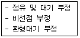
- Prevention
- Avoidance
- Detection
- Recovery
(정답률: 37%)
65. 파일 시스템에 대한 설명으로 옳지 않은 것은?
- 사용자가 파일을 생성하고 수정하며 제거할 수 있도록 한다.
- 한 파일을 여러 사용자가 공동으로 사용할 수 있도록 한다.
- 사용자가 적합한 구조로 파일을 구성할 수 없도록 제한한다.
- 사용자와 보조기억장치 사이에서 인터페이스를 제공한다.
(정답률: 56%)
66. 다중 처리기 운영체제 구성에서 주/종(Master/Slave) 처리기 시스템에 대한 설명으로 옳지 않은 것은?
- 주프로세서는 입/출력과 연산을 담당한다.
- 종프로세서는 입/출력 위주의 작업을 처리한다.
- 주프로세서만이 운영체제를 수행한다.
- 주프로세서에 문제가 발생하면 전체 시스템이 멈춘다.
(정답률: 52%)
67. 하나의 프로세스가 작업 수행 과정에서 수행하는 기억 장치 접근에서 지나치게 페이지 폴트가 발생하여 프로세스 수행에 소요되는 시간보다 페이지 이동에 소요되는 시간이 더 커지는 현상은?
- 스래싱(Thrashing)
- 워킹 셋(Working set)
- 세마포어(Semaphore)
- 교환(Swapping)
(정답률: 60%)
68. HRN(Highest Response-ratio Next) 방식으로 스케줄링할 경우, 입력된 작업이 다음과 같을 때 우선순위 가장 높은 작업은?
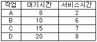
- A
- B
- C
- D
(정답률: 54%)
69. 보안 메커니즘 중 합법적인 사용자에게 유형 혹은 무형의 자원을 사용하도록 허용할 것인지를 확인하는 제반 행위로서, 대표적 방법으로 패스워드, 인증용 카드, 지문 검사 등을 사용하는 것은?
- Cryptography
- Authentication
- Digital Signature
- Threat Monitoring
(정답률: 50%)
70. UNIX는 어떤 디렉토리 구조를 갖는가?
- tree structured directory
- two level directory
- hashing structured directory
- single level directory
(정답률: 64%)
71. 주기억장치 관리기법인 First-fit, Best-fit, Worst-fit 방법을 각각 적용할 경우 9K의 프로그램이 할당된 영역이 순서대로 옳게 짝지어진 것은?
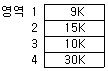
- 1, 1, 4
- 1, 4, 2
- 4, 3, 4
- 4, 3, 2
(정답률: 70%)
72. 프로세스의 정의로 옳지 않은 것은?
- 프로시저가 활동 중인 것
- PCB를 가진 프로그램
- 동기적 행위를 일으키는 주체
- 프로세서가 할당되는 실페
(정답률: 65%)
73. UNIX 파일 시스템의 inode에서 관리하는 정보가 아닌 것은?
- 파일의 링크수
- 파일이 만들어진 시간
- 파일의 크기
- 파일이 최초로 수정된 시간
(정답률: 66%)
74. 컴퓨터 시스템 성능을 할당시키기 위한 스풀링(SPOOLing)에 대한 설명으로 옳지 않은 것은?
- 여러 작업의 입출력과 계산을 동시에 수행할 수 있다.
- 스풀 공간으로 주기억장치의 일부를 사용하며, 소프트웨어적인 기법이다.
- 제한된 수의 입출력 장치 사용으로 인한 입출력 작업의 지연을 방지한다.
- 저속의 입출력 장치에서 읽어온 자료를 우선 중간의 저장장치에 저장하는 방식이다.
(정답률: 42%)
75. 3개의 페이지 프레임(Frame)을 가진 기억장치에서 페이지 요청을 다음과 같은 페이지 번호 순으로 요청했을 때 교체 알고리즘으로 FIFO 방법을 사용한다면 몇 번의 페이지 부재(Fault)가 발생하는가?(단, 현재 기억장치는 모두 비어 있다고 가정한다.)
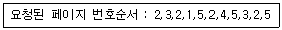
- 7번
- 8번
- 9번
- 10번
(정답률: 48%)
76. 운영체제의 목적 중 다음 설명에 해당하는 것은?
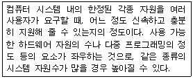
- reliability
- throughput
- turn-around time
- availability
(정답률: 54%)
77. 초기 헤드 위치가 50이며 트랙 0 방향으로 이동 중이다. 디스크 대기 큐에 다음과 같은 순서의 액세스 요청이 대기 중일 때 모든 처리를 완료하기 위한 헤드의 총 이동거리가 370일 경우 사용된 디스크 스케줄링 기법은?(단, 가장 안쪽 트랙 0, 가장 바깥쪽 트랙 200)
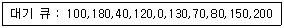
- SCAN
- SSTF
- FIFO
- C-SCAN
(정답률: 53%)
78. 가상기억장치 구현에서 세그먼테이션(segmentation) 기법의 설명으로 옳지 않은 것은?
- 주소 변환을 위해서 페이지 맵 테이블(Page Map Table)이 필요하다.
- 세그먼테이션은 프로그램을 여러 개의 블록으로 나누어 수행한다.
- 각 세그먼트는 고유한 이름과 크기를 갖는다.
- 기억장치 보호 키가 필요하다.
(정답률: 36%)
79. 파일 디스크립터에 대한 설명으로 옳지 않은 것은?
- 파일 제어 블록이라고도 한다.
- 시스템에 따라 다른 구조를 갖는다.
- 파일 시스템이 관리하므로 사용자가 직접 참조할 수 없다.
- 모든 파일이 하나의 파일디스크립터를 공용한다.
(정답률: 48%)
80. 운영체제의 기능으로 거리가 먼 것은?
- 자원을 효율적으로 사용하기 위하여 자원의 스케줄링 기능을 제공한다.
- 사용자와 시스템 간의 편리한 인터페이스를 제공한다.
- 데이터를 관리하고 데이터 및 자원의 공유 기능을 제공한다.
- 두 개 이상의 목적 프로그램을 합쳐서 실행 가능한 프로그램으로 만든다.
(정답률: 69%)
5과목: 마이크로 전자계산기
81. 다음은 CPU가 프린터로 데이터를 출력하는 과정을 나타낸 것이다. 순서대로 올바르게 나열된 것은?
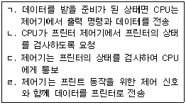
- ㄴ→ㄱ→ㄷ→ㄹ
- ㄴ→ㄷ→ㄱ→ㄹ
- ㄷ→ㄴ→ㄱ→ㄹ
- ㄷ→ㄱ→ㄴ→ㄹ
(정답률: 75%)
82. 입출력 장치와 CPU 사이의 자료 교환시 사용되는 기법들이다. 성격이 다른 것은?
- Parity bit 전송
- Synchronous 전송
- Cyclic redundancy character 전송
- Echo back
(정답률: 39%)
83. 마이크로컴퓨터 개발 시스템에 대한 설명으로 옳지 않은 것은?
- 하드웨어 개발 시간과는 무관하다.
- 하드웨어를 조정하고 소프트웨어를 개발하며 오류를 보정하기 위한 장치이다.
- 마이크로컴퓨터의 설계와 개발에 필요한 요구를 충족시킨다.
- 마이크로컴퓨터 시스템 개발 주기를 매우 빠르게 한다.
(정답률: 56%)
84. 중앙처리장치에 연결되는 양방향성 버스는?
- 데이터 버스
- 주소 버스
- 제어선
- 채널
(정답률: 55%)
85. 입력과 출력의 독립 제어점을 갖는 8비트로 구성된 5개의 레지스터에 상호 병렬 데이터전송이 가능하도록 하려면 데이터 선의 수는 몇 개로 하여야 하는가?
- 8
- 40
- 80
- 160
(정답률: 30%)
86. 다음 중 가장 많은 Cycle time을 필요로 하는 명령어 형식은?
- 0 address 방식
- 1 address 방식
- 2 address 방식
- 3 address 방식
(정답률: 63%)
87. 중앙처리장치로부터 입출력 지시를 받으면 직접 주기억장치에 접근하여 데이터를 입출력하고 입출력에 관한 모든 동작을 독립적으로 수행하는 입출력 제어 방식은?
- 프로그램에 의한 입출력 제어 방식
- 인터럽트에 의한 입출력 제어 방식
- DMA에 의한 입출력 제어 방식
- 프로세서에 의한 입출력 제어 방식
(정답률: 73%)
88. 제어 메모리에서 번지를 결정하는 방법과 관련이 없는 것은?
- 제어 어드레스 레지스터를 하나씩 증가
- 마이크로 명령어에서 지정하는 번지로 무조건 분기
- 상태 비트에 따라 무조건 분기
- 매크로 동작 비트로부터 ROM으로의 매핑(mapping)
(정답률: 29%)
89. 주기억장치에 기억된 프로그램의 명령을 해독하여 그 명령 신호를 각 장치에 보내 명령을 처리하도록 지시하는 것은?
- 제어 장치
- 연산 장치
- 기억 장치
- 입력 장치
(정답률: 76%)
90. 어떤 통신 선로의 전송 속도는 9600bps이며, 한 개 전송 문자는 8 비트 데이터와 4 비트의 제어 비트로 구성되어 있다면 1초당 전송되는 문자의 개수는?
- 400개
- 800개
- 1200개
- 2400개
(정답률: 44%)
91. 다음 중 제어 프로그램에 속하는 것은?
- 수퍼바이저 프로그램
- 언어 처리 프로그램
- 유틸리티 프로그램
- 응용 프로그램
(정답률: 70%)
92. 기억장치 대역폭(band width)에 대한 설명 중 틀린 것은?
- 기억 장치가 마이크로프로세서에 1초 동안에 전송할 수 있는 비트 수이다.
- 사이클 타임 또는 접근시간과 기억장치에 연결되어 있는 데이터 버스 길이(버스 폭)에 따라 결정된다.
- 한 번에 전송되는 데이터 워드가 크면 대역폭은 증가한다.
- 기억장치 모듈 접근시간이 크면 대역폭은 증가한다.
(정답률: 58%)
93. 양극성 소자(bipolar)로 만든 비트 슬라이스(bit-slice) 마이크로프로세서의 장점과 단점을 순서대로 옳게 나열한 것은?
- 고도의 집적도, 속도가 느림
- 고도의 집적도, 가격이 저렴함
- 전력소비량이 적음, 낮은 집적도
- 빠른 속도, 단일 칩으로 제작이 안됨
(정답률: 55%)
94. 프로그램 내에서 가까운 장소로 제어를 이동 시킬 때 가장 효과적인 주소 지정 방식은?(단, 프로그램은 주기억 장치 임의의 곳에서 시행된다고 본다.)
- 상대 어드레서 지정 방식
- 인덱스 어드레스 지정 방식
- 절대 어드레서 지정 방식
- 함축 어드레스 지정 방식
(정답률: 47%)
95. 마이크로컴퓨터를 구성하는 주요 버스가 아닌 것은?
- 검사 버스(test bus)
- 데이터 버스(data bus)
- 주소 버스(address bus)
- 제어 버스(control bus)
(정답률: 76%)
96. 주컴퓨터에서 원격지에 설치한 장비로서 여러 개의 단말 장치들을 접속, 이들로부터 발생하는 메시지들을 저장하여 하나의 메시지로 농축해서 전송함으로써 통신회선의 사용 효율을 증대시키는 장비를 무엇이라 하는가?
- decoder
- demultiplexer
- concentrator
- encoder
(정답률: 43%)
97. 마이크로컴퓨터의 병렬 입출력 인터페이스가 아닌 것은?
- PIO
- UART
- PPI
- PIA
(정답률: 73%)
98. Program Counter에 대한 설명으로 틀린 것은?
- 다음에 수행될 명령어의 주소를 저장한다.
- 분기 명령어가 아니라면 일반적으로 1~4가 증가한다.
- 분기 명령어의 주소 부분은 PC 값으로 전송된다.
- 연산의 결과를 저장하기 위한 레지스터이다.
(정답률: 57%)
99. 어셈블러 의사 명령(Pseudo instruction)의 기능과 관계없는 것은?
- 기계어로 번역된다.
- 어셈블러의 동작을 지시한다.
- 기억장소에 빈 장소를 마련한다.
- 다른 프로그램에서 정의된 기호를 사용할 수 있게 한다.
(정답률: 57%)
100. 8085 CPU에서 클록은 약 2.4576㎒ 이다. LDA 명령을 수행하는데 13개 T 스테이트가 필요하다. 이 때 명령 사이클은 약 몇 ㎲인가?
- 13
- 5.2
- 2.5
- 3.2
(정답률: 61%)